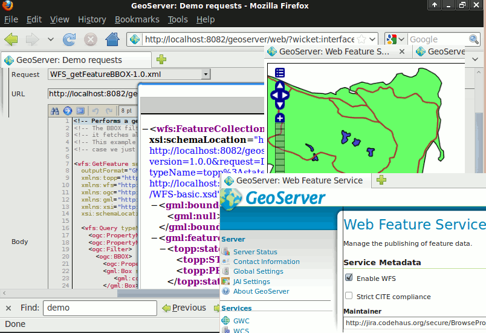

GeoServer¶
Internet Dienste¶
GeoServer ist ein WebServer, der es ermöglicht Karten und Daten verschiedener Formate Standardanwendungen wie Web Browsern und Desktop GIS Anwendungen bereit zu stellen. Die Daten werden über Eingabemasken, die sich an den Standards (WMS, WFS, WCS, WPS, Tile Caching und mehr) orientieren, veröffentlicht. GeoServer verfügt über eine browserbasierte Administration und verbindet so im Hintergrund viele Datenquellen.
{kind=link}
Kernfunktionen¶
- Server Daten verschiedener Datenquellen:
- Vektor
- Shapes, externe WFS
- PostGIS, ArcSDE, DB2, Oracle Spatial, MySql, SQL Server
- Raster
- GeoTiff, JPG and PNG (mit world file), Bildpyramiden, GDAL Formate, Image Mosaic, Oracle GeoRaster
- Daten werden als sichere und schnelle Bilder über das WMS Protokoll bereitgestellt:
- Da die Daten als Bild ausgegeben werden, sind Ihre Daten absolut abgesichert und verborgen. Abgesehen davon, dass Ihre Daten abdigitalisiert werden könnten, gibt es keine Möglichkeit, Ihre Daten zu stehlen. Die Darstellung jeder Kartenebene kann über SLD kontrolliert werden. SLD erlaubt es, Objekte farblich differenziert darzustellen und zu beschriften. Durch Kombination dieser Darstellungsregeln mit OGC Filtern kann eine maßstabsabhängige Darstellung erfolgen, bei der beim Zoom in die Karte mehr Details angezeigt werden. Beschriftungsverdrängung, Gruppierung, Priorisierung sind ebenfalls implemetiert.
- Über das WFS Protokoll können Vektordaten an den Client geschickt werden:
- Ein WFS Client kann Daten anfordern und zur Anzeige, Datenanalyse und für andere Oberationen nutzen. Liegt eine Authorisierung vor so kann der Benutzer Daten modifizieren und zurück an den Server schicken und mit Hilfe des WFS-T Protokolls aktualisieren. Die Daten können als GML (compressed) sowie in anderen Standardformaten wie Shape und JSON weitergegeben werden.
- Werte von Rasterdaten können an den Client über das WCS Protokoll geschickt werden:
- Ein GIS CLient kann die aktuellen Rasterdaten für den Einsatz in räumlichen Analysen anfordern. This allows a user to create applications which can model the process described by your data.
- On-the-fly Umprojektion:
- GeoServer unterstützt die Mehrzahl der EPSG Projektionen und kann Daten in jedes dieser Projektionssysteme umprojezieren. Hierdurch können Anwendungen mit begrenzter Umprojektionsunterstützung die Last auf den Server verlagern.
- Tiling Cache
- GeoWebCache wurde in GeoServer integriert. GeoWebCache kachelt und legt eine Zwischenspeicher von Kartenbilder von einer Vielzahl von Quellen beispielweise WMS an. Es wurden verschiedene Service Interfaces geschaffen (WMS-C, WMTS, TMS, Google Maps KML, Virtual Earth), um die Bildauslieferung zu beschleunigen und zu optimieren. Kacheln können ebenso wieder zusammengefügt werden, um mit gängigen WMS Clients zu arbeiten.
- Web Processing Service (WPS)
- Räumliche Algorithmen, inklusive der JTS Algorithme, können über GeoServer’s WPS Interface aufgerufen werden. Dies beinhaltet das Verketten von Prozessen und verwendet Renderingtransformationen, um eine beeindruckende Darstellungdurch das WMS Interface zu erzeugen.
Implementierte Standards¶
- Unterstützung zahlreicher Open Geospatial Consortium (OGC) Standards:
- Web Map Service (WMS)
- Web Map Tile Service (WMTS)
- Web Feature Service (WFS), WFS-T (transaktional)
- Web Coverage Service (WCS)
- Web Processing Service (WPS)
- Filter Encoding (FE)
- Style Layer Descriptor (SLD)
- Geography Markup Language (GML)
- KML Encoding Standard (KML)
Details¶
Webseite: http://geoserver.org/display/GEOS/Welcome
Lizenz: GNU General Public License (GPL) version 2
Software Version: 2.8.2
Unterstützte Plattformen: Alle Java 6 Plattformen: - Windows, Linux, Mac
API Schnittstellen: WMS, WFS, WCS, REST
Support: http://geoserver.org/display/GEOS/Commercial+Support